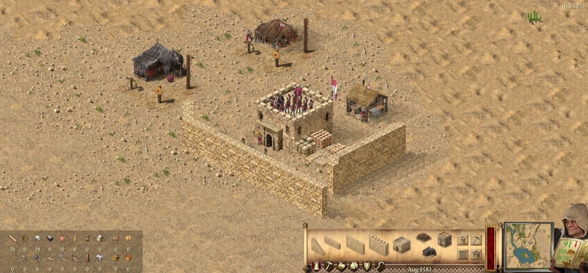
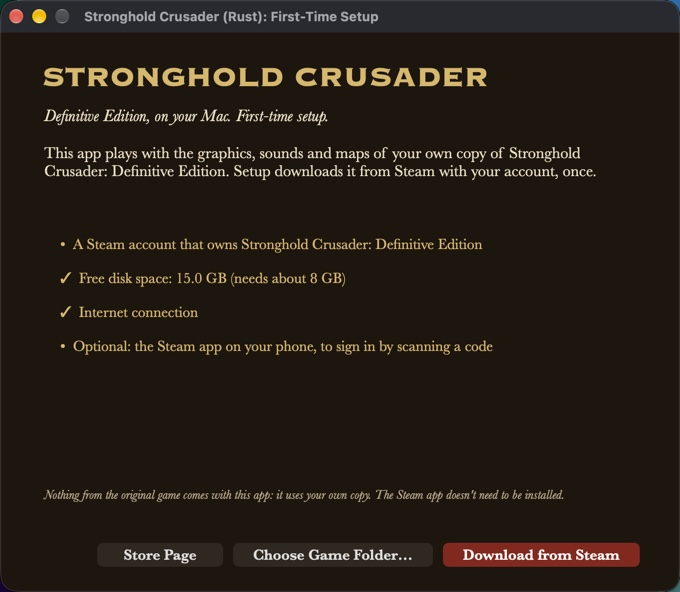
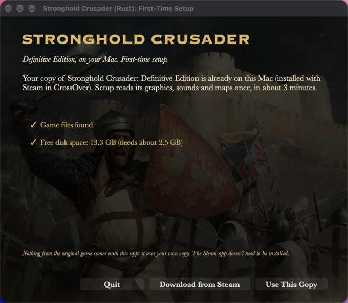
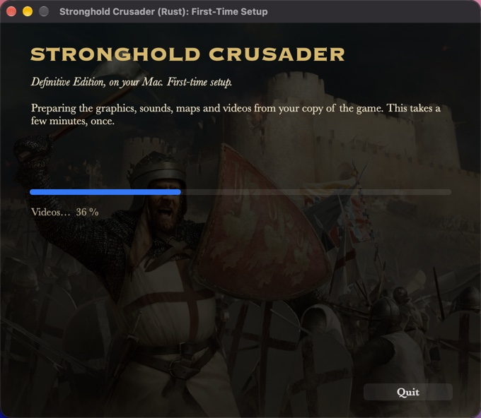
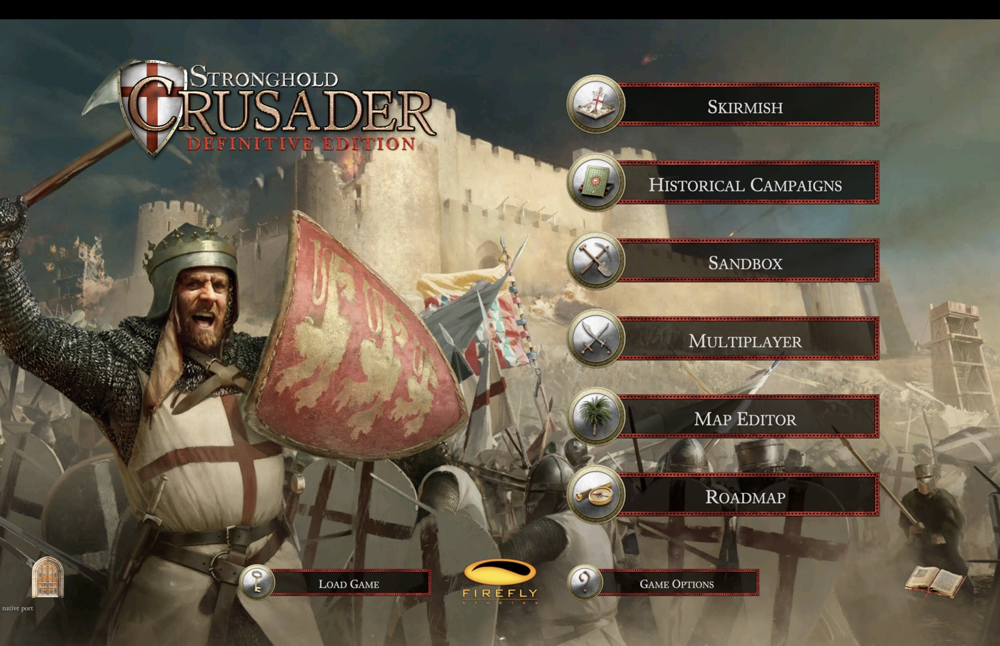

Rust. Native. Fast.
Every tick of the simulation runs as native Apple Silicon code, written in Rust and checked against the original game tick by tick. The picture comes straight from Metal. Nothing is translated or emulated on the way.
Measured on a MacBook Pro with M1 Max. The simulation is a ground-up port of the original engine's logic, so battles, economy and AI play out the way they do in the original.
The castle, natively
The original game is a Unity front end driving a Windows-only simulation library. This project reverse engineers that simulation and ports it to Rust, tick for tick, and draws it with Metal. Your castles, your economy and the lords you fight run on the Mac itself, verified against recordings of the original.

First start: three clicks
The app brings the engine, not the game. The first time you open it, a setup window gets the graphics, sounds, maps and videos from your own copy of the game, once.
Check
Setup checks for a Steam account that owns the game, about 9.5 GB of free space and an internet connection. A copy already on the Mac (for example in CrossOver) is found and used directly.
Sign in to Steam
Scan a code with the Steam app on your phone, or sign in with your user name, password and Steam Guard code. The Steam app for Mac doesn't need to be installed.
Download and prepare
Your copy of the game downloads (about 6.2 GB) and its assets are prepared for the native engine in about two minutes. Then the main menu opens.



Install
- Download the app (always the newest version).
- Open it and drag the app into Applications.
- The first time only: right-click the app and choose Open. On macOS 15 or newer, open it once, then go to System Settings › Privacy & Security and click Open Anyway. The app isn't notarized by Apple yet.
- Follow the setup window. Afterwards the app opens straight to the main menu.
You need
- A Mac with Apple Silicon (M1 or newer), macOS 12 or newer
- Stronghold Crusader: Definitive Edition on your Steam account
- About 9.5 GB of free disk space
- Optional: the Steam app on your phone, to sign in by scanning a code
Your Steam sign-in goes to Steam through Valve's open-source DepotDownloader, which the app carries. Your password is passed to it once and never saved.
What the app does on your Mac
No telemetry, no analytics, no ads, no account of ours. The internet is used for three things, nothing else:
Updates
From GitHub only. Once a day, and when you press Check for updates in Extras, the app asks for the latest release and the published custom lords and maps. It sends only its version; GitHub sees your IP address, like any website. It downloads only when you click Update or Get, and installs nothing whose SHA-256 differs from the one GitHub lists.
Steam
Only when you choose to download the game: Valve's open-source DepotDownloader signs in and downloads. Your password goes to it once, through its input: never saved, never logged, never on a command line.
LAN games
Only when you host or join: your local network, UDP port 47777 to find games and TCP 47778 to play.
Files
The app writes only to ~/Library/Application Support/Strong Hold (your copy of the game, the prepared assets, settings, saves, maps, imported lords) and ~/Library/Logs/Strong Hold.log, and, when you click Update, its own app (the new version goes next to it; Restart to update swaps the two). A copy of the game in CrossOver is only read (its saves show up in Load Game too, and can't be deleted from here), and so is its CustomLords folder; a lord's .zip you import is only read. DepotDownloader (.NET) may leave an empty IsolatedStorage folder next to ours. To uninstall, drag the app to the Bin and delete those folders.
Other programs it starts: DepotDownloader for the Steam download, macOS's curl for the update check and downloads, shasum, tar, hdiutil, ditto and codesign to check and unpack an update, open when you click to show a folder or the releases page and to start the updated app, date once for your time zone on the save list.
Check it yourself
- The source code of all of this: the whole app except the simulation, which has no network or file code
- Every release lists the DMG's SHA-256 and links its VirusTotal scan
- The bundled DepotDownloader is pinned by hash; its source comes with every release
What it supports
The whole game, natively. The port is in active development; parts of the simulation are still being verified against the original. Not yet: online multiplayer and Intel Macs.
Single player
Skirmish against AI lords with Advanced Skirmish Options and Extreme, your own lords from the game's CustomLords folder, King of the Hill, the historical campaigns, the Crusader Trail with Sands of Time, ranks, Customize, Skirmish Masters and custom trails, the tutorial, Free Build with events and powers.
Multiplayer
Local network games, King of the Hill, co-op Crusader Trail, chat to chosen players or teams, the insults, pause, game speed for everyone and multiplayer saves.
Map Editor
Shape the land, water, trees, rocks and animals, then place keeps, buildings, walls, troops and starting goods. Your maps play in Custom Skirmish and the Sandbox.
Your lord
Player name, colour and the coat of arms editor, shown on troops, flags, the lobby, trails and score screens.
The game's own feel
Original music, speech, advisor and lord videos, win and lose videos, in-game Help, score screens with graphs, reports, building panels, market trading, tooltips and the original hotkeys.
On the Mac
Native Metal at 120 fps, 12× fast-forward, menu bar, trackpad zoom and rotate, full screen, borderless or windowed, and it updates itself (and your custom lords) in two clicks.

Beyond the original
A fan port can add what the original never had. Everything here lives outside the simulation, which stays byte for byte the original's, so saves, replays and LAN games stay exact. Rule changes are opt-in.
Custom lords
Add AI lords from a .zip: their own face, voice, castles, story video and reactions to the battle. Lord David von Lindschied is the first; published lords install and update from Extras.
Extended rules
An opt-in lobby switch for new units and rules. First in: the Sassanid Knight, a lancer whose first blow after a six-tile charge strikes twice as hard, trained at the Sassanid Stable. Classic games are untouched.
Modes and lobby
King of the Hill (short, normal, long), a clear game mode picker, Competitive Start, custom maps that travel to everyone in a LAN game, and a Maps catalog in Extras.
Controls
Click one unit out of a group, filter a selection by troop type, right-click rally points, add to a group, select all of a type, more hotkeys, and units that move on an even clock even when the Mac is busy.
Sturdier multiplayer
A new host takes over when the host leaves, the host checks every message before it reaches the game, a frozen peer no longer freezes everyone, dropped players rejoin, spectators follow along.
Tools
Replays of every game, a frame trace and judder score for tuning, an in-app updater, and a simulation proven tick by tick against the original engine, so a port bug and an original quirk are told apart.
Releases
A new version every few days. The app tells you when one is out: download the new DMG and drag it over the old app; your game files, settings and saves stay. Every release on GitHub.
- 0.18.025 Oct 2026
Lord David von Lindschied builds a real castle: his corner and wall towers go up early (on Crater Lake most stand after about 20 minutes instead of 40), his battlements come after the towers, and three small lookout towers with archers watch over his houses and workshops. He opens his quarries sooner for the stone, and the economy guard that only stood at his keep now mans those towers. In Extended games his battlements wait until his towers stand. His army ends stronger; his first siege comes a few minutes later. Players who have him get the new version in Extras (Update).
- 0.17.125 Oct 2026
Fixes: scrolling up by pushing the mouse against the top of the screen works in full screen (the map kept still once the menu bar took the cursor); the Options screen no longer replays the button click sound while you hover a button.
- 0.17.025 Oct 2026
Mouse players: mice with smooth scrolling (Logitech Options+, most Bluetooth mice) zoom with the wheel again instead of panning; a Magic Mouse pans, or zooms like the original with View > Trackpad Scrolling Pans off. Options > Controls: Scroll speed and Push map scrolling now apply. PageUp / PageDown zoom the minimap out to the whole map and back in, as in the original. The app checks for a new version at every start (not once a day). Custom lords can require a minimum app version: an older app refuses the lord and points you to the update instead of loading it wrong.
- 0.16.025 Oct 2026
Lord David von Lindschied is a real opponent now: his army keeps growing (as strong as Richard's), he marches on you with siege waves of 20 to 30 crossbowmen and swordsmen with engines once he is ready, and a levy of archers holds his walls meanwhile. With Extended rules his swordsmen raid only farms nobody guards, never past your troops, and ride home after. He speaks up when your army reaches his walls and after hard fights, his reactions show reliably (also after loading a save), his clips play smoothly and all his lines are shorter and as loud as the other lords'. Get the new version in Extras.
- 0.15.124 Oct 2026
Fix: the no-workers sign shows again over buildings that are missing a worker.
- 0.15.024 Oct 2026
Extended rules: an opt-in switch in the skirmish and LAN lobby with the Sassanid Knight, a lancer whose first blow after a six-tile charge strikes twice as hard, trained at the new Sassanid Stable. In the lobby: a clear game mode picker, Competitive Start, and search, sort and Show Completed in the Custom Scenarios and Free Build lists. In game: the standings (Order of Merit) panel, ally ping (Alt+P) with its marker button by the minimap, right-click rally points, add-to-group and select-all-of-a-type hotkeys, custom maps that travel over LAN and a Maps catalog in Extras, and the Classic mouse-wheel, radar zoom, planned-moat and spoken-greeting options now applied. As in the Definitive Edition: the siege tent shows at the cursor when engineers place an engine, Quit Mission and Exit Crusader ask first, the mission briefing opens in skirmishes too, buildings and troops in your player colour, hover texts on the side tabs, and the mercenary post and armoury panels tidied. Fixes: letters no longer vanish from menus after a long session, the Keeps menu is locked in games (a stray keep could move yours), smoother camera and walking under load. Lord David von Lindschied reacts to the battle with 16 new clips, carries his own banner and guard, and no longer sells his wheat and flour. macOS Game Mode in full screen.
- 0.14.024 Oct 2026
The app updates itself: Update in the main menu or Extras downloads the new version (about 13 MB), checks it, and Restart to update installs it, so no more new DMG for every release. Custom lords from the web: Extras lists the published lords with Get / Update, and the main menu tells you when one of yours has a newer version (Lord David von Lindschied is the first). Sturdier LAN games, and saves, settings and maps that can't be lost to a crash mid-write.
- 0.13.424 Oct 2026
Catapults, siege towers, battering rams and fire ballistas swing round to a new direction as in the original instead of snapping.
- 0.13.324 Oct 2026
An assassin's climbing rope fades out as in the original instead of vanishing at once.
- 0.13.224 Oct 2026
Horses (and every walking unit) move evenly in a live game, also in big armies on a full screen: no more two-steps-then-pause judder when macOS paces frames unevenly.
- 0.13.124 Oct 2026
LAN: the game no longer can freeze for everyone when the host quits a game of three or more players.
- 0.13.024 Oct 2026
A new Extras button on the main menu: this build's version and folders, Check for updates, the patch notes, and your custom lords with Import lord (.zip). Importing moved here from the skirmish's Add AI panel: an imported lord simply joins the Add AI faces, and a .zip dropped on the window opens Extras with the result.
- 0.12.323 Oct 2026
Pressing a build hotkey the game refuses (walls without stone) no longer shows a red outline with a "Not ported in the sim yet" note at the cursor.
- 0.12.223 Oct 2026
Knights and other horses ride smoothly, also in big armies: no more stop-and-go on every step, no jumping back in a crowd, and they keep gliding when a large battle slows the game down.
- 0.12.123 Oct 2026
Importing a lord from a .zip in Add AI now opens his story page right away and plays his story video when he brings one. Custom lords can bring a full-screen story video ("Watch his story" on their page). A custom lord's keep, scores and stats now show his own name instead of the Rat's. A first custom lord to try, Lord David von Lindschied, is attached to the release as a .zip.
- 0.12.023 Oct 2026
Custom lords join the Add AI faces next to the built-in lords: a red (!) on a face opens his story page, and one Import tile adds a lord from a .zip. Custom lords work in LAN games and can bring their own figure on the map. Horses no longer jerk backwards while they run. The floating gold and popularity numbers over keeps and houses show their icon and number again instead of an empty scroll.
- 0.11.223 Oct 2026
Troops standing just behind a building now stay behind it instead of being drawn over its roof, and archers on keeps stand behind the battlements. The download is about 5 MB bigger: the art for the coming Sassanid Knight is already inside.
- 0.11.123 Oct 2026
Troops walking behind buildings now go behind them instead of over them. With the modern controls, ordering your lord alone no longer opens the right-click menu. The move and attack cursor is the original's size on Retina screens.
- 0.11.023 Oct 2026
Custom AI lords: lords from the game's CustomLords and CustomMedia folders join skirmishes with their own face, voice and videos. Click one unit out of a selected group to command it alone; in the troops panel, click a troop type to keep only that type, or right-click it to drop it from the selection.
- 0.10.023 Oct 2026
King of the Hill, a new skirmish and LAN mode: kill the guards of the tower on the hill, hold it alone to make it yours, and score while you keep it: first to the target wins. AI lords fight for the hill too. Buttons, checkboxes, panels and text boxes now use the game's own red-and-gold look. For King of the Hill over LAN, everyone needs 0.10.0.
- 0.9.023 Oct 2026
Change the game speed during LAN games and co-op missions with the + and − keys or in Options: it changes for every player. Everyone in a LAN game needs 0.9.0.
- 0.8.122 Oct 2026
No more shell script inside the app (one virus scanner mistook it for a trojan), the source code of everything except the simulation is public, and a page on what the app does on your Mac.
- 0.8.022 Oct 2026
Map Editor part 2: keeps, buildings, walls, troops and starting goods for each player; editor maps play in Custom Skirmish. Coat of arms editor and your own player name. LAN games share coats of arms.
- 0.7.022 Oct 2026
Sands of Time results after each trail win, trail completion screens, campaign missions wait for the advisor, and the main menu offers missing game files (one Steam sign-in, only what is new).
- 0.6.022 Oct 2026
Advisor and lord videos over the minimap, full-screen win and lose videos, victory and defeat speech, building sketches, tutorial arrows, building tooltips, multiplayer chat with insults.
- 0.5.022 Oct 2026
Map Editor part 1: pick a size and game type, shape the land, add water, trees, rocks and animals, save and load your maps.
- 0.4.021 Oct 2026
Your colour everywhere, the Allies panel, Free Build events and powers, control groups, Advanced Skirmish Options, exact projectile maths for LAN games in sync.
- 0.3.021 Oct 2026
In-game Help, the score screen, every building panel, market auto trading, the original hotkeys, a save dialog, credits, display modes and many options.
- 0.2.021 Oct 2026
New name: Strong Hold. The Crusader Trail, all historical campaign missions, Reports, full troop orders, the original camera, LAN chat, pause, saves and co-op trail.
- 0.1.121 Oct 2026
A notice on the main menu when a new version is out, co-op ally castles, AI sieges and squads, the tutorial.
- 0.1.020 Oct 2026
First release: the native engine and the first-start setup that gets your own copy of the game. Skirmish, campaigns, sandbox and LAN.